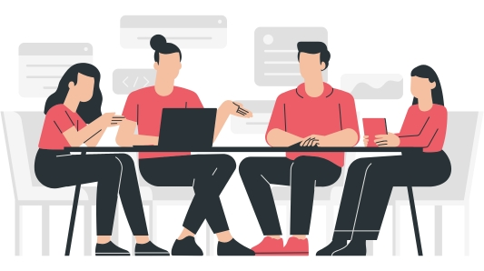
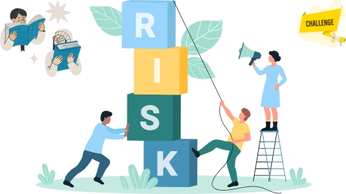
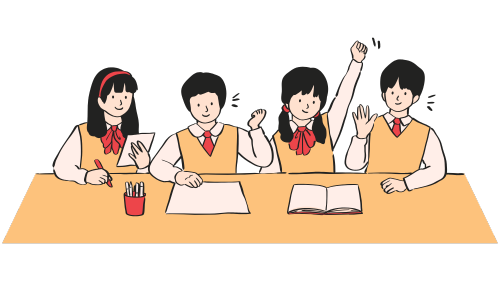
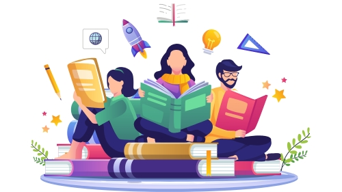

Pentingnya Sistem Informasi dalam Literasi Media
Pelajari lebih lanjutTantangan Literasi Media di Kalangan Pelajar
Pelajari lebih lanjutStrategi Mengembangkan Literasi Media
Pelajari lebih lanjutDampak Literasi Media Terhadap Pelajar
Pelajari lebih lanjutPentingnya Sistem Informasi dalam Literasi Media

Sistem informasi telah menjadi tulang punggung dalam era digital yang serba cepat ini. Dalam konteks literasi media, sistem informasi membantu individu untuk mengakses, memahami, mengevaluasi, dan menciptakan informasi secara kritis. Literasi media tidak hanya melibatkan kemampuan membaca atau mendengar informasi, tetapi juga memahami cara informasi tersebut dihasilkan, disebarkan, dan dikonsumsi di masyarakat.
A. Apa Itu Sistem Informasi?
Sistem informasi adalah kombinasi dari perangkat keras, perangkat lunak, data, manusia, dan proses yang dirancang untuk mengumpulkan, mengolah, dan menyebarluaskan informasi. Dalam literasi media, sistem informasi digunakan untuk:
1. Mengakses informasi: Memberikan platform untuk mencari, menemukan, dan mengakses informasi dari berbagai sumber.
2. Mengevaluasi informasi: Membantu pengguna menilai kebenaran, relevansi, dan kredibilitas informasi.
3. Mengelola informasi: Memungkinkan individu atau organisasi untuk menyimpan dan mengelola data dengan baik.
4. Berkomunikasi informasi: Memfasilitasi komunikasi dan distribusi informasi kepada khalayak yang lebih luas.
B. Peran Sistem Informasi dalam Literasi Media
1. Peningkatan Aksesibilitas Informasi : Sistem informasi memungkinkan masyarakat untuk mengakses informasi dari berbagai platform, seperti situs berita, media sosial, blog, dan jurnal akademik. Hal ini sangat penting untuk meningkatkan pemahaman masyarakat tentang isu-isu terkini.
2. Penyaringan Informasi : Dengan volume informasi yang besar, sistem informasi membantu menyaring data berdasarkan relevansi dan kredibilitas. Misalnya, algoritma di mesin pencari seperti Google memprioritaskan hasil pencarian yang lebih terpercaya.
3. Mendeteksi Hoaks : Sistem informasi dapat digunakan untuk memeriksa fakta atau mendeteksi hoaks dengan menggunakan teknologi berbasis kecerdasan buatan (AI). Beberapa alat pengecekan fakta, seperti TurnbackHoax atau Snopes, mengandalkan sistem informasi untuk menganalisis kebenaran klaim tertentu.
4. Penyebaran Informasi yang Akurat : Sistem informasi memfasilitasi distribusi informasi akurat kepada masyarakat. Contohnya adalah pemerintah yang menggunakan sistem informasi untuk menyampaikan kebijakan atau kampanye publik.
5. Edukasi Literasi Digital : Sistem informasi digunakan untuk mengedukasi masyarakat tentang literasi media. E-learning, seminar daring, dan kampanye digital memanfaatkan sistem informasi untuk menyebarkan materi edukasi kepada masyarakat.
6. Kolaborasi dengan Media : Sistem informasi memungkinkan kerja sama antara media, organisasi, dan masyarakat untuk meningkatkan literasi media. Contohnya adalah program pelatihan literasi media berbasis teknologi yang melibatkan wartawan, pendidik, dan praktisi IT.
C. Manfaat Sistem Informasi dalam Literasi Media
1. Meningkatkan Kesadaran Publik Masyarakat menjadi lebih sadar akan pentingnya mengevaluasi informasi sebelum mempercayainya atau menyebarkannya.
2. Mengurangi Penyebaran Hoaks Dengan adanya alat pengecekan fakta dan edukasi tentang literasi media, masyarakat lebih mampu mengenali berita palsu atau informasi yang menyesatkan.
3. Mempercepat Akses terhadap Informasi Berkualitas Dengan menggunakan mesin pencari, platform berita terpercaya, dan aplikasi pendidikan, masyarakat dapat dengan cepat mendapatkan informasi yang relevan.
4. Meningkatkan Transparansi Sistem informasi yang baik memungkinkan masyarakat untuk memantau kegiatan pemerintahan, lembaga publik, atau perusahaan, sehingga mendorong transparansi dan akuntabilitas.
5. Mendukung Pembelajaran Berbasis Teknologi Dalam dunia pendidikan, sistem informasi memungkinkan guru dan siswa untuk belajar tentang literasi media melalui aplikasi, modul daring, dan perangkat lunak pembelajaran interaktif.
D. Tantangan dalam Penerapan Sistem Informasi untuk Literasi Media
1. Ketimpangan Digital Tidak semua orang memiliki akses ke perangkat atau jaringan internet yang memadai, sehingga masih ada kesenjangan dalam literasi media.
2. Keamanan dan Privasi Sistem informasi rentan terhadap pelanggaran data dan privasi pengguna, yang dapat menghambat upaya literasi media.
3. Manipulasi Algoritma Algoritma di platform digital sering kali memprioritaskan konten sensasional dibandingkan informasi yang kredibel.
4. Kurangnya Pendidikan Literasi Digital Banyak masyarakat yang belum teredukasi tentang cara menggunakan sistem informasi secara efektif.
E. Contoh Sistem Informasi dalam Literasi Media
1. Aplikasi Pengecekan Fakta
TurnbackHoax, Snopes, atau FactCheck.org membantu masyarakat mengecek fakta informasi secara daring.
2. Sistem Manajemen Berita
Situs berita seperti BBC, The New York Times, atau Kompas menggunakan sistem informasi canggih untuk menyajikan berita terpercaya.
3. E-learning tentang Literasi Media
Kursus online seperti yang ditawarkan di Coursera atau EdX mengajarkan dasar-dasar literasi media.
4. Media Sosial dengan Fitur Verifikasi
Platform seperti Twitter dan Facebook telah menambahkan fitur verifikasi fakta untuk mengidentifikasi berita palsu.
Tantangan Literasi Media di Kalangan Pelajar
 Pelajar adalah kelompok yang paling rentan terhadap informasi digital karena tingginya intensitas penggunaan media sosial di kalangan mereka. Meskipun pelajar saat ini lebih mudah mengakses informasi melalui internet, ada banyak tantangan yang mereka hadapi dalam menyaring dan memahami informasi tersebut. Salah satu tantangan utama adalah terbatasnya pemahaman mengenai validitas sumber informasi. Tidak jarang, pelajar mengambil informasi dari situs yang tidak kredibel atau tidak melakukan pengecekan fakta terlebih dahulu.
Tantangan lainnya adalah terjebak dalam bias kognitif dan algoritma media sosial. Platform digital biasanya menggunakan algoritma yang menampilkan konten yang sesuai dengan preferensi dan interaksi pengguna sebelumnya. Akibatnya, pelajar cenderung terjebak dalam ruang gema (echo chamber), di mana mereka hanya melihat perspektif yang sama berulang kali dan mengabaikan sudut pandang yang berbeda. Hal ini dapat mempersempit pandangan mereka dan membuat mereka lebih mudah terpengaruh oleh disinformasi.
Kemampuan berpikir kritis sangat penting dalam menghadapi tantangan ini. Sayangnya, tidak semua pelajar memiliki keterampilan untuk menganalisis berita atau informasi yang mereka terima dengan kritis. Pendidikan literasi media di sekolah sering kali masih terbatas pada penggunaan teknologi, tanpa adanya pelatihan yang memadai mengenai cara menganalisis konten media secara kritis dan bijaksana. Ini menyebabkan banyak pelajar yang rentan terhadap manipulasi informasi dan propaganda digital.
Selain itu, banyak pelajar yang belum memahami bagaimana mengenali tanda-tanda manipulasi dalam media visual. Berbagai platform media sosial dipenuhi dengan gambar, video, dan infografis yang terkadang dibuat sedemikian rupa untuk memengaruhi persepsi audiens. Memahami dasar-dasar manipulasi gambar dan video, seperti teknik deepfake atau manipulasi teks, adalah tantangan besar bagi pelajar yang tidak dibekali dengan keterampilan ini. Hal ini berisiko membuat mereka mudah percaya pada informasi visual yang salah atau dipalsukan.
1. Paparan Informasi yang Berlebihan (Information Overload)
Di era digital ini, pelajar setiap harinya terpapar oleh ribuan informasi dari berbagai platform media sosial, internet, dan media konvensional. Hal ini membuat mereka kesulitan untuk membedakan informasi yang benar, relevan, dan kredibel dari yang tidak. Kondisi ini sering kali menyebabkan kelelahan kognitif, di mana pelajar tidak memiliki cukup energi atau waktu untuk menganalisis setiap informasi yang diterima. Akibatnya, berita palsu atau hoaks sering kali diterima begitu saja tanpa verifikasi yang memadai.
2. Kurangnya Kemampuan Mengenali Berita Palsu dan Hoaks
Salah satu tantangan utama literasi media adalah minimnya kemampuan pelajar dalam mengenali berita palsu. Judul sensasional, manipulasi gambar, atau video yang diedit sering kali membuat pelajar percaya pada informasi yang tidak akurat. Ditambah lagi, kurangnya keterampilan dalam melakukan verifikasi fakta menyebabkan banyak pelajar menerima dan menyebarkan informasi yang tidak kredibel.
3. Ketergantungan pada Media Sosial
Bagi sebagian besar pelajar, media sosial adalah sumber utama informasi. Namun, media sosial memiliki algoritma yang cenderung menunjukkan konten yang sudah disukai sebelumnya. Hal ini menciptakan "filter bubble," yang membuat pelajar hanya terpapar pada sudut pandang tertentu. Selain itu, penyebaran informasi yang cepat melalui media sosial sering kali mendahului proses verifikasi fakta, sehingga berita palsu lebih mudah tersebar luas.
4. Minimnya Pendidikan Literasi Media di Sekolah
Banyak institusi pendidikan belum secara aktif memasukkan literasi media ke dalam kurikulum. Tanpa pendidikan yang memadai, pelajar sering kali tidak memiliki keterampilan dasar untuk menganalisis informasi secara kritis. Guru juga sering kali tidak mendapatkan pelatihan yang cukup untuk mengajarkan literasi media, sehingga mereka tidak dapat membimbing siswa secara efektif.
5. Faktor Budaya dan Lingkungan
Budaya dan lingkungan sosial memainkan peran penting dalam membentuk kemampuan literasi media pelajar. Di banyak komunitas, norma sosial yang rendah terhadap verifikasi informasi membuat berita palsu diterima begitu saja. Selain itu, kurangnya bimbingan dari keluarga dalam memahami media secara kritis menambah tantangan ini. Pelajar juga cenderung mengabaikan informasi yang tidak sesuai dengan pandangan mereka, meskipun faktual.
6. Keterbatasan Akses Teknologi
Meskipun teknologi semakin canggih, masih ada pelajar yang menghadapi kendala dalam mengakses perangkat atau internet. Ketimpangan digital ini membuat mereka terbatas pada sumber informasi yang sempit. Pelajar di daerah pedesaan sering kali tidak memiliki akses ke komputer atau koneksi internet yang stabil, sehingga sulit untuk mengeksplorasi informasi dari berbagai perspektif.
7. Dampak Psikologis dari Media
Penggunaan media yang tidak terkontrol dapat berdampak negatif pada psikologis pelajar. Banyak pelajar yang mengalami kecanduan media sosial, yang mengurangi waktu mereka untuk belajar dan menganalisis informasi. Selain itu, tekanan sosial dari tren atau opini populer sering kali memengaruhi cara mereka memahami isu-isu tertentu, sehingga mengurangi kemampuan berpikir kritis.
8. Kurangnya Kolaborasi Antara Sekolah dan Media
Kolaborasi antara institusi pendidikan dan media sangat penting dalam meningkatkan literasi media, tetapi sering kali belum terealisasi dengan baik. Minimnya inisiatif untuk mengadakan seminar, lokakarya, atau program literasi media bersama membuat pelajar kehilangan kesempatan untuk belajar langsung dari para profesional. Media juga jarang memberikan edukasi kepada masyarakat tentang bagaimana memahami informasi secara kritis.
9. Pengaruh Komersialisasi Media
Media sering kali dipengaruhi oleh kepentingan komersial, sehingga sulit bagi pelajar untuk membedakan antara informasi objektif dan iklan terselubung. Fenomena clickbait, di mana judul berita dibuat sensasional untuk menarik perhatian, membuat pelajar cenderung mengklik tanpa membaca isi artikel secara kritis. Selain itu, konten bersponsor sering kali disamarkan sebagai berita asli, sehingga menyesatkan pembaca.
10. Etika Konsumsi Media
Tantangan lain yang sering diabaikan adalah kurangnya pemahaman pelajar tentang etika dalam konsumsi media. Mereka sering menyebarkan informasi tanpa memeriksa fakta atau sumbernya, yang dapat memperburuk penyebaran berita palsu. Selain itu, pelanggaran hak cipta juga sering terjadi, seperti mengunduh atau menggunakan konten tanpa izin, yang mencerminkan kurangnya kesadaran etis.
11. Perkembangan Teknologi yang Cepat
Dunia digital terus berubah dengan cepat, sehingga pelajar kesulitan mengikuti perkembangan terbaru. Teknologi baru, seperti kecerdasan buatan dalam manipulasi informasi, membuat berita palsu semakin sulit dideteksi. Selain itu, munculnya platform baru dengan aturan yang berbeda tentang moderasi konten menambah kompleksitas dalam memahami dan mengelola informasi.
Tantangan literasi media di kalangan pelajar mencakup berbagai aspek, mulai dari paparan informasi yang berlebihan hingga keterbatasan akses teknologi dan kurangnya pendidikan formal. Dengan memahami tantangan-tantangan ini, pihak sekolah, keluarga, dan media dapat bekerja sama untuk meningkatkan literasi media, sehingga pelajar dapat menjadi konsumen informasi yang kritis, etis, dan bertanggung jawab.
Strategi Mengembangkan Literasi Media
Pengembangan literasi media membutuhkan pendekatan multi-dimensi yang mencakup pendidikan formal, kolaborasi dengan pihak media, serta pemberdayaan masyarakat. Berikut adalah beberapa strategi yang dapat diterapkan untuk meningkatkan literasi media di kalangan pelajar:
A. Memasukkan Literasi Media dalam Kurikulum Sekolah
Memasukkan literasi media sebagai bagian dari kurikulum sekolah dapat membantu pelajar untuk memahami dan menyaring informasi secara lebih kritis. Kurikulum ini harus mencakup keterampilan dalam mengidentifikasi berita palsu, mengenali tanda-tanda bias dalam berita, serta mempelajari cara mengevaluasi kredibilitas sumber informasi. Kurikulum literasi media juga harus melibatkan pembelajaran tentang bagaimana media bekerja, termasuk proses produksi berita dan faktor yang mempengaruhi konten media.
Studi Kasus:
Di sebuah sekolah menengah atas di Jakarta, kurikulum literasi media diperkenalkan sebagai mata pelajaran wajib bagi siswa kelas 10. Dalam salah satu sesi pembelajaran, siswa diminta untuk menganalisis artikel viral yang mengklaim bahwa "minum kopi hitam setiap hari bisa menyembuhkan semua jenis kanker." Guru memandu siswa untuk memeriksa sumber berita, mengidentifikasi kredibilitas penulis, serta memverifikasi klaim tersebut melalui jurnal medis terpercaya. Hasilnya, siswa memahami pentingnya mengevaluasi informasi secara kritis dan belajar bahwa klaim tersebut adalah hoax yang tidak didukung oleh penelitian ilmiah.
Pelajaran yang Didapat:
Integrasi literasi media ke dalam kurikulum membuat siswa lebih cakap dalam menilai informasi dan mengurangi risiko penyebaran hoax.
B. Pelatihan untuk Guru dan Tenaga Pendidik
Guru dan tenaga pendidik juga perlu dibekali dengan keterampilan literasi media. Mereka harus memiliki pemahaman yang cukup untuk dapat mengajarkan siswa tentang cara menganalisis informasi dengan benar. Pelatihan khusus tentang penggunaan media digital, teknik pengecekan fakta, serta cara mendeteksi hoax dapat membantu guru untuk menjadi fasilitator yang efektif dalam proses pembelajaran literasi media.
Studi Kasus:
Dinas Pendidikan di Surabaya mengadakan pelatihan untuk guru-guru SMP tentang literasi media. Dalam pelatihan ini, para guru diajarkan cara menggunakan aplikasi pengecekan fakta seperti TurnbackHoax dan Google Fact Check. Salah satu sesi pelatihan berfokus pada simulasi: peserta diberikan 10 artikel berita, yang lima di antaranya adalah berita palsu. Guru-guru diminta untuk mengidentifikasi berita palsu menggunakan teknik seperti cross-referencing dengan sumber terpercaya. Setelah pelatihan, guru melaporkan bahwa mereka merasa lebih percaya diri untuk membimbing siswa dalam menganalisis informasi digital.
Pelajaran yang Didapat:
Pelatihan yang tepat dapat memberdayakan guru untuk menjadi fasilitator literasi media yang efektif.
C. Kolaborasi dengan Pihak Media dan Praktisi
Kerja sama antara institusi pendidikan dengan media dan praktisi media sangat penting. Media dapat membantu mengadakan seminar, lokakarya, atau kampanye yang mengajarkan masyarakat tentang pentingnya literasi media. Melalui kolaborasi ini, siswa bisa belajar langsung dari para profesional tentang etika jurnalistik, proses peliputan berita, dan teknik verifikasi informasi. Beberapa media juga telah berinisiatif untuk membuat program literasi media, yang menyediakan tutorial dan panduan untuk mengenali hoax.
Studi Kasus:
Salah satu stasiun televisi swasta bekerja sama dengan sebuah universitas di Bandung untuk mengadakan program "Literasi Media untuk Generasi Z." Program ini mencakup seminar online yang dihadiri oleh lebih dari 1.000 siswa SMA. Para peserta belajar langsung dari jurnalis tentang bagaimana berita diproduksi, bagaimana hoax tersebar di media sosial, dan cara memverifikasi informasi dengan benar. Sebagai bagian dari program, siswa diminta untuk membuat video pendek tentang literasi media dan mempresentasikannya kepada teman-teman mereka.
Pelajaran yang Didapat:
Kolaborasi dengan media memberikan wawasan praktis yang memperkaya pembelajaran siswa dan meningkatkan kesadaran akan pentingnya etika jurnalistik.
D. Menggunakan Teknologi Pengecekan Fakta dan Aplikasi Pendukung
Pemanfaatan aplikasi pengecekan fakta bisa menjadi alat bantu yang sangat bermanfaat dalam pengembangan literasi media. Saat ini sudah banyak aplikasi yang dirancang untuk membantu pengguna melakukan pengecekan fakta secara cepat. Dengan aplikasi ini, pelajar bisa memverifikasi informasi yang mereka terima dengan lebih mudah. Selain itu, teknologi kecerdasan buatan (AI) juga semakin berkembang dalam mendeteksi berita palsu atau manipulasi informasi, yang sangat membantu dalam proses pembelajaran.
Studi Kasus:
Di Yogyakarta, sekelompok siswa SMA menggunakan aplikasi Hoax Analyzer untuk memverifikasi berita yang mereka temukan di grup WhatsApp keluarga mereka. Salah satu berita yang dianalisis adalah klaim tentang "bawang putih mentah sebagai obat ajaib COVID-19." Dengan menggunakan aplikasi tersebut, siswa menemukan bahwa klaim itu tidak memiliki dasar ilmiah dan telah dibantah oleh WHO. Setelah mempelajari cara kerja aplikasi ini, siswa mulai mengajarkan orang tua mereka untuk menggunakan teknologi serupa, sehingga dampak positifnya meluas ke masyarakat.
Pelajaran yang Didapat:
Pemanfaatan teknologi meningkatkan kecepatan dan efisiensi dalam memverifikasi informasi, serta mendorong siswa untuk berbagi pengetahuan dengan komunitas mereka.
E. Mendorong Diskusi Terbuka tentang Isu-Isu Terkini
Mengadakan diskusi terbuka di sekolah tentang isu-isu terkini adalah strategi lain untuk mengembangkan literasi media. Dengan berdiskusi, pelajar didorong untuk mencari informasi, memahami sudut pandang yang berbeda, dan mengevaluasi fakta secara kritis. Diskusi ini juga melatih pelajar untuk menghargai perbedaan pendapat dan berpikir analitis.
Studi Kasus:
Di sebuah sekolah di Makassar, sebuah diskusi terbuka tentang isu perubahan iklim diadakan sebagai bagian dari kelas literasi media. Siswa dibagi menjadi dua kelompok: satu kelompok mencari artikel yang mendukung bahwa perubahan iklim disebabkan oleh aktivitas manusia, sementara kelompok lain mencari artikel yang menyatakan sebaliknya. Setelah mengumpulkan data, siswa mempresentasikan temuan mereka dan mendiskusikan perbedaan dalam sumber informasi, gaya penyajian data, dan potensi bias. Diskusi ini membantu siswa memahami pentingnya sudut pandang yang seimbang dan berpikir kritis terhadap informasi yang mereka konsumsi.
Pelajaran yang Didapat:
Diskusi terbuka melatih siswa untuk memahami isu-isu kompleks, menghargai sudut pandang yang berbeda, dan menganalisis informasi secara mendalam.
Dampak Literasi Media Terhadap Pelajar
Dampak literasi media terhadap pelajar sangat besar dan mencakup berbagai aspek, mulai dari aspek akademik, sosial, hingga psikologis. Berikut adalah beberapa dampak utama literasi media yang mendalam:
A. Kemampuan Berpikir Kritis yang Meningkat
Literasi media mendorong pelajar untuk tidak hanya menjadi penerima informasi pasif, tetapi juga untuk menganalisis dan mengevaluasi setiap informasi yang mereka terima. Ini sangat penting di dunia yang dipenuhi dengan informasi bias dan berita palsu. Dengan kemampuan berpikir kritis, pelajar dapat membedakan antara fakta dan opini, mengenali bias, dan tidak mudah terpengaruh oleh propaganda.
B. Kesadaran Etika dan Tanggung Jawab dalam Menggunakan Media
Literasi media juga menumbuhkan kesadaran tentang etika penggunaan media. Pelajar yang melek media cenderung lebih bertanggung jawab dalam menyebarkan informasi. Mereka memahami konsekuensi dari penyebaran berita palsu dan berhati-hati dalam membagikan konten yang belum diverifikasi. Ini membentuk sikap bertanggung jawab yang sangat penting di era media sosial.
C. Penguatan Identitas dan Pemahaman terhadap Isu Sosial
Literasi media dapat membantu pelajar memperkuat identitas mereka dengan lebih mengenal isu-isu sosial yang relevan. Dengan memahami berbagai perspektif, pelajar dapat mengembangkan pandangan yang lebih komprehensif dan kritis terhadap isu-isu penting seperti lingkungan, hak asasi manusia, dan keadilan sosial. Literasi media juga memungkinkan mereka untuk menyadari nilai-nilai yang mereka pegang, membentuk kepercayaan diri dalam berpendapat, dan terlibat aktif dalam diskusi sosial.
D. Mengurangi Dampak Negatif dari Disinformasi
Literasi media membantu pelajar untuk mengurangi dampak negatif dari disinformasi yang dapat menyebabkan salah persepsi dan konflik sosial. Dengan kemampuan untuk mengecek fakta dan mengenali tanda-tanda berita palsu, pelajar dapat melindungi diri dari manipulasi yang sering dilakukan oleh kelompok tertentu untuk mencapai agenda tertentu. Ini juga membantu mereka untuk tidak menyebarkan informasi yang salah kepada orang lain, mengurangi penyebaran hoax di masyarakat.
E. Pengembangan Keterampilan Sosial dan Kritis dalam Berkomunikasi
Dengan memahami literasi media, pelajar juga belajar cara berkomunikasi dengan baik dan efektif. Mereka dapat menyampaikan ide mereka secara jelas, menyusun argumen yang logis, dan mendengarkan dengan kritis. Keterampilan ini penting tidak hanya dalam interaksi sehari-hari, tetapi juga dalam kehidupan profesional di masa depan.
Literasi media memiliki peran penting dalam meningkatkan kemampuan berpikir kritis pelajar. Dengan memahami cara kerja media dan bagaimana informasi disajikan, pelajar mampu menganalisis konten secara lebih mendalam. Mereka dapat membedakan fakta dari opini, mengenali bias dalam berita, serta mengevaluasi kredibilitas sumber informasi. Kemampuan ini tidak hanya berguna dalam kehidupan sehari-hari tetapi juga mempersiapkan mereka menghadapi tantangan di dunia digital yang penuh dengan informasi yang salah atau menyesatkan.
Selain itu, literasi media juga memberikan kesadaran terhadap keberadaan berita palsu atau hoaks. Pelajar yang terlatih dalam literasi media cenderung lebih kritis terhadap informasi yang mereka terima dan memahami pentingnya melakukan verifikasi sebelum menyebarkan informasi tersebut. Hal ini membantu mengurangi penyebaran berita palsu di masyarakat, yang sering kali memicu keresahan atau kesalahpahaman. Dengan demikian, literasi media tidak hanya bermanfaat bagi individu tetapi juga masyarakat secara keseluruhan.
Di bidang akademik, literasi media memberikan dampak positif yang signifikan. Pelajar dengan literasi media yang baik mampu memanfaatkan teknologi digital untuk menunjang pembelajaran mereka. Mereka dapat mencari informasi yang relevan dengan cepat, mengevaluasi data dengan cermat, dan menyusun argumen yang solid dalam tugas-tugas sekolah. Literasi media juga mengembangkan kreativitas pelajar, karena mereka belajar menggunakan berbagai alat digital untuk mengkomunikasikan ide-ide mereka secara efektif.
Kemampuan komunikasi juga menjadi salah satu dampak utama dari literasi media. Pelajar yang memahami cara menyampaikan pesan secara efektif dapat berkomunikasi dengan lebih baik, baik di dunia nyata maupun di platform digital. Literasi media mengajarkan pentingnya etika dalam komunikasi, seperti menghormati pendapat orang lain dan menghindari penyebaran ujaran kebencian. Ini sangat penting di era di mana interaksi sosial semakin banyak terjadi di dunia maya.
Lebih jauh, literasi media dapat membantu pelajar mengurangi ketergantungan mereka pada media sosial. Dengan pemahaman yang lebih baik tentang cara kerja algoritma media sosial dan dampaknya terhadap emosi atau persepsi, pelajar dapat menggunakan media sosial secara lebih bijak. Mereka lebih mampu memilih konten yang bermanfaat dan tidak mudah terpengaruh oleh tekanan sosial atau tren yang tidak relevan.
Di sisi lain, literasi media juga meningkatkan kesadaran pelajar terhadap hak digital mereka. Mereka menjadi lebih waspada terhadap ancaman seperti pencurian data, cyberbullying, atau eksploitasi digital. Dengan pemahaman ini, pelajar dapat melindungi diri mereka dengan lebih baik di dunia digital yang semakin kompleks.
Selain dampak pribadi, literasi media mendorong pelajar untuk berpartisipasi aktif dalam masyarakat. Mereka mampu menggunakan media untuk menyuarakan pendapat mereka tentang isu-isu sosial secara konstruktif. Partisipasi ini tidak hanya memperkuat kesadaran sosial mereka tetapi juga memberikan kontribusi nyata bagi komunitas mereka.
Namun, literasi media juga memengaruhi aspek personal, seperti pembentukan identitas diri. Pelajar yang memahami pengaruh media terhadap persepsi diri cenderung lebih percaya diri dan tidak terlalu terpengaruh oleh standar yang tidak realistis, seperti yang sering disajikan oleh budaya populer. Mereka lebih mampu mengekspresikan diri secara autentik dan menghargai keunikan mereka sendiri.
Secara keseluruhan, literasi media memberikan dampak yang luas dan mendalam terhadap pelajar. Dari peningkatan kemampuan akademik hingga pengelolaan kesehatan mental, literasi media menjadi keterampilan esensial yang harus dimiliki oleh generasi muda di era digital. Literasi media tidak hanya membekali mereka dengan pengetahuan tetapi juga membantu mereka menjadi individu yang kritis, mandiri, dan bertanggung jawab.